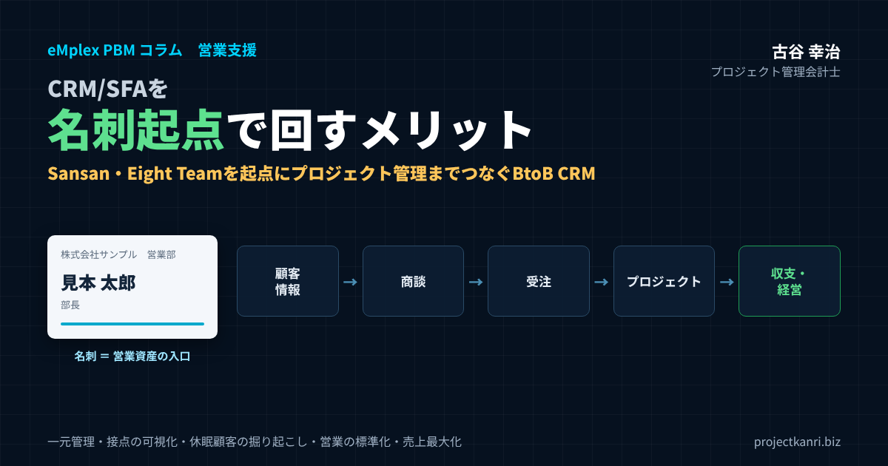

CRM/SFAを名刺起点で活用するメリットとは？Sansan・Eight Teamを起点にしたプロジェクト管理でBtoB CRMを実現する方法―顧客情報の一元管理・名刺データの資産化から営業DX・休眠顧客の掘り起こし・売上拡大まで

結論：名刺は連絡先ではなく、会社の「営業資産」の入口
この記事のポイント
- 名刺は単なる連絡先ではなく、会社の営業資産の入口
- CRMは「誰とどんな関係か」、SFAは「どの商談がどこまで進んだか」を管理。入口はどちらも名刺
- SansanやEight Teamで名刺を正確にデータ化・共有するのはスタート
- 名刺起点の5つのメリット：一元管理と資産化／接点の可視化／休眠顧客の掘り起こし／営業の標準化／商談化率・受注率の見える化
- 名刺→顧客→商談→受注→プロジェクト→収支→経営ダッシュボードまで途切れさせない
プロジェクト管理会計士の古谷です。CRMやSFAを導入したものの、入力されない、使われない、経営に生かされない。そんなご相談を、これまで数多くいただいてきました。その原因をたどっていくと、多くの場合、データの「入口」の設計に行き着きます。
BtoBの営業の入口は、ほとんどの場合、名刺です。セミナー、展示会、紹介、訪問。新しい関係は、名刺交換から始まります。その名刺を、個人の名刺入れに眠らせるのか、会社の顧客データベースの入口にするのか。この違いが、CRMやSFAが生きるかどうかを決めます。
本記事でお伝えしたいのは、名刺は単なる連絡先ではなく、会社の営業資産だという考え方です。SansanやEight Teamといった名刺管理サービスで名刺を正確にデータ化し、それを起点に、取引先、商談、受注、プロジェクト、収支までをひとつながりで管理する。そうすることで、CRMとSFAは、営業の記録の道具から、経営の判断を支える基盤に変わります。
私自身、CRMソフトウェアの会社であるエンプレックス（現SCSK）で取締役CFOを務め、その後、200社を超える企業の経営管理をご支援してきました。現在は、名刺を起点にプロジェクトを中心としたBtoB CRMの世界観を、eMplexシリーズとして形にしています。その経験から、名刺起点でCRMとSFAを回すメリットと、その実現の方法を、できるだけ具体的にお伝えします。
CRMとは？SFAとは？違いと関係
最初に、CRMとSFAの違いを整理しておきます。どちらも営業や顧客対応を支えるシステムですが、目的と管理の対象が異なります。
CRM（Customer Relationship Management、顧客関係管理）は、顧客との関係を長期的に管理し、深めていくための考え方と仕組みです。顧客の会社や担当者の情報、これまでの取引の履歴、問い合わせや対応の履歴などを一元的に管理し、顧客との関係を継続的に育てることを目的とします。
SFA（Sales Force Automation、営業支援システム）は、営業活動そのものを管理し、効率化するための仕組みです。商談の進捗、営業担当者の活動の記録、受注の見込み、パイプラインの管理など、営業のプロセスを見える化し、受注につなげることを目的とします。
| CRM（顧客関係管理） | SFA（営業支援システム） | |
|---|---|---|
| 目的 | 顧客との関係を長期的に深める | 営業活動を効率化し受注につなげる |
| 主な管理対象 | 会社・担当者、取引・対応の履歴 | 商談、営業活動、受注見込み、パイプライン |
| 問い | 誰と、どのような関係にあるか | どの商談が、どこまで進んでいるか |
| 主な利用者 | 営業、カスタマーサポート、マーケティング、経営 | 営業担当者、営業マネージャー |
| 名刺との関係 | 顧客の会社・担当者の情報の入口 | 商談の起点となる接点の記録 |
簡単に言えば、CRMは「誰と、どのような関係にあるのか」を管理し、SFAは「どの商談が、どこまで進んでいるのか」を管理します。実際の製品では、CRMとSFAの機能をあわせ持つものも多く、両者の境界はあいまいになっています。大切なのは、名前の違いではなく、両者がつながっていることです。顧客との関係の情報と、商談の進捗の情報がつながっていなければ、営業の活動は、その場限りのものになってしまいます。
そして、この二つのどちらにも欠かせないのが、顧客の情報の入口です。CRMにもSFAにも、まず顧客の会社と担当者の情報が登録されていなければなりません。その入口となるのが、名刺なのです。
なお、CRMやSFAと並んで、MA（マーケティングオートメーション）という言葉もよく使われます。MAは、見込みの顧客を獲得し、メールの配信や企業のサイトの閲覧の分析などを通じて関心を育て、営業に引き渡すまでを支援する仕組みです。名刺は、MAにとっても重要な入口です。名刺で得た接点をMAで育て、SFAで商談として管理し、CRMで長期的な関係として深めていく。この三つの仕組みが名刺を起点につながると、マーケティングから営業、顧客との関係の管理までが一本の線になります。
CRMやSFAを選ぶときに、機能の多さで比べてしまう会社は少なくありません。しかし、機能がどれほど豊富でも、データが入っていなければ何の役にも立ちません。どのような入口からデータが入り、そのデータがどこまでつながるのか。名刺を起点にした設計の考え方は、システムを選ぶときの物差しにもなります。
名刺管理システム・Excel・CRMの違い
名刺の管理の方法には、いくつかの段階があります。紙の名刺を名刺入れやファイルで保管する段階、Excelなどの表計算のソフトで一覧にする段階、名刺管理システムでデータ化して共有する段階、そしてCRMやSFAとつないで営業や経営に活用する段階です。
| 段階 | できること | 限界 |
|---|---|---|
| 紙の名刺 | 手元で確認できる | 個人の資産のまま、検索・共有ができない |
| Excelなどの一覧 | 一覧化・簡単な検索 | 入力の手間、表記ゆれ、重複、更新漏れ、ファイルの分散 |
| 名刺管理システム | スキャンでデータ化、全社で共有、名寄せ | その後の商談・プロジェクト・収支までは分からない |
| CRM/SFAとの連携 | 名刺を取引先・商談・プロジェクト・収支とつなぐ | データ構造と運用の設計が必要 |
Excelでの管理は、手軽に始められる一方で、入力の手間、表記のゆれ、重複、更新の漏れといった問題が起きやすく、担当者ごとにファイルが分かれてしまうことも少なくありません。名刺管理システムを使えば、名刺をスキャンするだけでデータ化でき、社内で共有できます。しかし、名刺管理システムだけでは、その名刺がその後どのような商談になり、どのプロジェクトにつながり、どれだけの利益を生んだのかまでは分かりません。
名刺管理システムが得意なのは、名刺を正確にデータ化し、社内の誰がどの会社の誰と接点を持っているのかを共有することです。CRMやSFAが得意なのは、その接点を商談や取引の履歴とつなげて管理することです。両者の得意な領域を組み合わせることで、名刺は、はじめて営業の資産として生きてきます。
名刺情報が営業部門の「入口」である理由
新規の商談は、多くの場合セミナーや紹介、展示会での名刺交換から始まります。しかし名刺情報がその場限りで個人の引き出しや名刺入れに眠ってしまい、組織としての資産にならないケースは少なくありません。名刺情報を営業活動の起点として一元管理することで、誰がいつどこで出会った相手なのか、その後どんな商談に発展したのかを組織全体で追跡できるようになります。個人の営業活動の記録が、組織全体の資産へと変わる最初の一歩がここにあります。
名刺には、会社の名前、部署、役職、氏名、連絡先、そして名刺を交換した日と、交換した社員という情報が含まれています。この「誰が、いつ、どの会社の誰と出会ったのか」という情報は、CRMの最も基本的なデータです。しかも、名刺交換は、営業担当者だけでなく、経営者、プロジェクトマネージャー、技術者、管理部門の社員など、会社のあらゆる人が日々行っています。会社全体の名刺を集めれば、それは、会社と社会との接点の地図になります。
もう一つ、名刺が入口として優れているのは、入力の負担が小さいことです。CRMに新しい顧客を一件ずつ手で入力するのは大変ですが、名刺をスキャンするだけであれば、現場の負担はほとんどありません。入力されないことがCRMの最大の失敗の原因だとすれば、名刺を入口にすることは、その原因を根本から取り除く方法でもあるのです。
名刺の情報が入口として価値を持つのは、それが「事実」の記録だからでもあります。営業の担当者の主観で書かれる商談のメモと違い、名刺交換は、いつ、誰と出会ったのかという客観的な事実です。事実のデータを入口にすることで、CRMのデータ全体の信頼性も高まります。
SansanとEight Team：名刺起点の基盤となる名刺管理サービス
名刺を会社の資産にするための基盤として、多くの会社で使われているのが、Sansan株式会社が提供する名刺管理サービスです。法人向けのSansanと、中小企業やチーム向けのEight Teamがあります。私たちも、名刺の管理にSansanとEightを活用しています。
Sansanは、法人向けの名刺管理サービスです。公式の情報などによれば、専用のスキャナーやスマートフォンで名刺を取り込むと、AIの技術とオペレーターの入力によって高い精度でデータ化され、自動の名寄せで人物の単位に整理されて、全社で共有できるデータベースになります。企業の情報や人事異動の情報の提供、営業の履歴の管理、SFAやCRM、MAとの連携の機能も提供されています。
Eight Teamは、名刺アプリのEightのラインアップで、中小企業やチーム向けの名刺管理サービスです。スマートフォンでの撮影やスキャナーで名刺を取り込み、チームで名刺を共有し、タグや共有のメモ、検索、名寄せなどの機能で活用できます。CSVでの書き出しやAPIでの連携、他のサービスで管理していた名刺の一括の取り込みにも対応しているとされています。
| Sansan | Eight Team | |
|---|---|---|
| 提供会社 | Sansan株式会社 | Sansan株式会社 |
| 主な対象 | 法人（中堅・大企業を中心に幅広く） | 中小企業・チーム |
| 名刺の取り込み | 専用スキャナー・スマートフォン | スマートフォン撮影・スキャナー |
| データ化 | AIとオペレーター入力による高精度のデータ化 | 名刺のデータ化（Eightの仕組み） |
| 共有・整理 | 自動名寄せで人物単位に整理し全社で共有 | チームで共有、タグ・共有メモ・検索・名寄せ |
| 連携・出力 | SFA・CRM・MAとの連携など | CSVエクスポート、API連携、他サービスからの一括取り込み |
各社の公式情報・掲載情報をもとにした概要です。機能・料金は変更されることがあるため、必ず公式情報でご確認ください。
どちらを選ぶかは、会社の規模、名刺の枚数、求めるデータ化の精度、既存のシステムとの連携の必要性、費用などによって変わります。具体的な機能や料金、連携の方法は、変更されることもありますので、必ずSansan株式会社の公式の情報で確認してください。
大切なのは、どちらのサービスを使うにしても、名刺のデータ化と共有は「ゴール」ではなく「スタート」だということです。SansanやEight Teamで集めた名刺のデータを、取引先、商談、プロジェクト、収支とつなげてはじめて、名刺は営業と経営の資産になります。この点については、別のコラム「Googleデータポータルで『名刺』×『企業サイト閲覧履歴』を可視化する最新実践レポート」でも、SansanやEightの名刺データを活用したレポートの作り方を紹介しています。
なお、名刺管理サービスにはそれぞれの強みがあり、自社のCRMやプロジェクト管理の仕組みとどのようにつなぐかによって、最適な選択は変わります。すでに名刺管理サービスを使っている会社であれば、新たに切り替えるよりも、今あるデータをどう活用するかから考えるほうが現実的です。
名刺起点でCRM/SFAを回す5つのメリット
それでは、名刺を起点にCRMとSFAを回すと、どのようなメリットがあるのでしょうか。私は、大きく五つのメリットがあると考えています。
| メリット | 内容 |
|---|---|
| ① 顧客情報の一元管理・名刺データの資産化 | 個人の名刺を全社の顧客データベースに。名寄せで会社・人の単位に整理 |
| ② 人脈・顧客接点の可視化 | 誰が、いつ、どの会社の誰と接点を持ったかを組織で把握 |
| ③ 休眠顧客の掘り起こし・見込み顧客の発掘 | 眠っている接点から新しい商談を生み出す |
| ④ 営業活動の標準化・属人化の解消 | フォロー・商談の手順を統一し、組織で共有 |
| ⑤ 営業機会と売上の最大化 | 商談化率・受注率を見える化し、チャネルと活動を改善 |
以下、一つずつ詳しく見ていきます。
メリット①：顧客情報の一元管理と名刺データの資産化
一つ目のメリットは、顧客の情報を一元的に管理し、名刺のデータを会社の資産にできることです。
名刺が個人の名刺入れに眠っている状態では、その人脈は、その社員個人のものです。社員が異動したり、退職したりすれば、その人脈は会社から失われます。名刺を全社で共有するデータベースに登録すれば、その人脈は会社の資産になります。
ただし、名刺を集めるだけでは、一元管理にはなりません。同じ会社の名刺が、表記のゆれによって別の会社として登録されている。同じ人の名刺が、異動や昇進のたびに別の人として登録されている。こうした状態では、顧客の全体像は見えません。会社の単位、人の単位で名寄せを行い、取引先のマスタと名刺をひもづけることで、はじめて顧客の情報が一元化されます。
名寄せには、会社の名前の表記をそろえるルールや、法人番号のような会社を一意に特定できる番号を使う方法があります。名刺管理サービスの名寄せの機能と、CRMの取引先のマスタをうまく組み合わせることが、データの資産化の第一歩です。
名刺データの資産化は、会社の価値そのものにも関わります。事業を承継するとき、あるいは会社が成長して組織が大きくなるとき、顧客との関係が特定の人に依存していることは、大きなリスクになります。顧客との関係が、会社のデータベースに、誰が見ても分かる形で記録されていること。それは、会社が人に依存せずに顧客との関係を維持できることを示す、目に見えない資産なのです。
メリット②：人脈・顧客接点の可視化
二つ目のメリットは、誰が、いつ、どの会社の誰と接点を持ったのかを、組織として把握できることです。
ある会社に新しく提案に行こうとしたとき、社内の誰かがすでにその会社の担当者と名刺を交換しているかもしれません。経営者どうしの付き合いがあるかもしれません。技術者が過去のプロジェクトで先方の担当者と一緒に仕事をしていたかもしれません。こうした社内の接点が見えれば、紹介をお願いしたり、過去の経緯を聞いたりして、より良い形で提案に臨むことができます。
接点の可視化は、営業の担当者だけのものではありません。プロジェクトの現場で、顧客のキーパーソンと日々接しているのは、プロジェクトマネージャーや技術者です。彼らが交換した名刺も、会社の大切な接点です。営業の担当者の名刺だけでなく、会社全体の名刺を集めることで、顧客との関係の本当の姿が見えてきます。
とくにBtoBの取引では、一つの顧客企業の中に、決裁者、利用部門の担当者、購買の担当者、技術の担当者など、複数の関係者がいます。名刺を起点にすれば、顧客企業の中の誰と、社内の誰がつながっているのかという、人と人の関係の地図を描くことができます。
接点の可視化は、リスクの管理にも役立ちます。社内の複数の社員が、同じ顧客の別々の担当者と、別々の話を進めていた。こうしたことは、組織が大きくなるほど起こりやすくなります。顧客との接点が一つの画面で見えていれば、社内の調整を先に行い、会社として一貫した対応をすることができます。
メリット③：休眠顧客の掘り起こしと見込み顧客の発掘
三つ目のメリットは、休眠している顧客や、まだ商談になっていない見込みの顧客から、新しい営業の機会を生み出せることです。
名刺のデータベースには、過去に名刺を交換したものの、その後連絡を取っていない人がたくさん含まれています。数年前に取引があったが、今は取引のない顧客。展示会で名刺を交換したが、商談にならなかった見込みの顧客。こうした「眠っている接点」は、実は大きな営業の機会の宝庫です。
名刺のデータと取引の履歴がつながっていれば、「過去に取引があり、最後の取引から二年以上が経過している顧客」や、「名刺は交換しているが、一度も商談になっていない会社」といった条件で、掘り起こしの対象を抽出することができます。名刺管理サービスが提供する人事異動の情報を活用すれば、昔の担当者が昇進して決裁者になった、といった変化をきっかけに、改めて連絡を取ることもできます。
見込みの顧客を育てる、いわゆるリードナーチャリングの観点でも、名刺は出発点になります。セミナーの案内やニュースレターを送り、関心の高まった顧客に営業の担当者が連絡する。名刺の情報と、セミナーの参加の情報や、企業のサイトの閲覧の情報を組み合わせることで、連絡すべきタイミングを見極めやすくなります。
休眠顧客の掘り起こしで大切なのは、一律の営業の連絡ではなく、相手にとって意味のある連絡をすることです。過去のプロジェクトの成果をもとに、その後の状況を伺う。業界の動向や制度の変更に関する情報を届ける。セミナーへの招待をきっかけにする。過去の関係の記録があるからこそ、相手に合わせた連絡ができるのです。
メリット④：営業活動の標準化と属人化の解消
四つ目のメリットは、営業の活動を標準化し、属人化を解消できることです。
営業の活動が属人化している会社では、どの顧客とどのような話をしているのか、商談がどこまで進んでいるのかが、担当者の頭の中にしかありません。担当者が休んだり、異動したりすると、顧客への対応が止まってしまいます。上司も、担当者に聞かなければ状況が分からず、適切な助言ができません。
名刺を起点に、顧客、商談、活動の記録をCRMとSFAで管理すれば、営業の活動は組織で共有されます。名刺交換の後のフォローの手順、商談の段階の定義、提案の後の確認の手順を決め、それに沿って活動を記録することで、営業のプロセスが標準化されます。標準化されたプロセスがあれば、新しく入った営業の担当者も、早く成果を出せるようになります。
属人化の解消は、営業の担当者を管理するためのものではありません。担当者が一人で抱え込んでいる負担を、組織で分かち合うためのものです。顧客の情報が共有されていれば、担当者が不在のときにも、同僚が対応できます。担当者は安心して休みを取ることができ、組織としての対応の質も上がります。
営業のマネージャーにとっても、標準化のメリットは大きいものがあります。部下の商談の状況をCRMで確認できれば、一対一の面談で、事実をもとにした具体的な助言ができます。「あの会社の件はどうなっている？」と聞くところから始めるのではなく、「この商談は提案の段階で一か月止まっているが、何が課題か」と、要点から話を始めることができるのです。
メリット⑤：商談化率・受注率の見える化と営業機会・売上の最大化
五つ目のメリットは、営業の生産性を測る指標が見えるようになり、営業の機会と売上を最大化できることです。
名刺起点でデータを蓄積していくと、どのチャネルから獲得した名刺が商談化しやすいか、どの営業担当者が高い受注率を実現しているかといった、営業活動の生産性を測る指標が見えてきます。これは個々の営業担当者の評価だけでなく、どのセミナーや展示会に投資すべきかというマーケティング戦略の判断材料としても活用できます。感覚的に「良さそう」と判断していたチャネル選定を、データに基づいて見直すきっかけにもなります。
| 指標 | 計算の考え方 | 分かること |
|---|---|---|
| 名刺獲得数 | 期間内に獲得した名刺の数（チャネル別・担当者別） | 接点づくりの量 |
| 商談化率 | 商談になった件数 ÷ 獲得した名刺（または接点）の数 | フォローと見込み客の質 |
| 受注率 | 受注件数 ÷ 商談件数 | 提案力と商談の選び方 |
| 平均受注金額・粗利 | 受注金額・プロジェクト粗利の平均 | 案件の質 |
| リードタイム | 名刺交換から受注までの期間 | 営業サイクルの長さ |
| 継続受注率 | プロジェクト終了後に次の案件を受注した割合 | 関係の深さ |
これらの指標を、名刺を獲得したチャネル別、営業担当者別、業種別、期間別に見ていくと、営業の活動のどこに課題があるのかが見えてきます。名刺は多く集まっているのに商談化率が低いのであれば、名刺交換の後のフォローに課題があるのかもしれません。商談は多いのに受注率が低いのであれば、提案の内容や、商談の対象の選び方に課題があるのかもしれません。
指標を見るときに注意したいのは、営業の担当者を責めるための材料にしないことです。指標は、営業の活動を改善するための手がかりです。うまくいっている担当者のやり方を共有し、組織全体の生産性を上げるために使うことで、指標は現場から受け入れられます。
さらに、指標を受注の段階で止めず、プロジェクトの粗利まで見ることが、プロジェクト型ビジネスでは特に重要です。受注率が高くても、値引きで受注しているために粗利が低いのであれば、その受注は本当に良い受注とは言えません。名刺から収支までがつながってはじめて、営業の生産性を、利益の視点から評価できるようになります。
取引先・プロジェクト履歴とのつながりを持たせる
名刺情報を単体で管理するだけでは効果は限定的です。重要なのは、その名刺の相手が所属する取引先の情報や、過去にどのようなプロジェクトが発生したかという履歴とひもづけて管理することです。これにより、新しい担当者が過去の取引経緯を把握しないまま商談に臨んでしまうといった事態を防ぎ、より精度の高い提案につなげることができます。担当者が異動や退職をした場合でも、引き継ぎの質が担保される点も大きなメリットです。
プロジェクトの履歴には、そのプロジェクトの内容だけでなく、誰が担当し、どのような成果を上げ、どのような課題があったのかという情報も含まれます。過去のプロジェクトで顧客から高い評価を受けた技術者がいれば、次の提案でもその技術者をアサインすることを検討できます。過去のプロジェクトで採算が悪化した経緯があれば、次の見積もりで同じ失敗を繰り返さないよう注意できます。
名刺、取引先、プロジェクトの履歴がつながっていれば、営業の担当者は、商談の前に、顧客との関係の全体像を確認できます。誰と、いつから、どのような取引があり、どのプロジェクトがどのような結果だったのか。この情報を持って商談に臨むことで、顧客からの信頼は大きく変わります。
プロジェクト型ビジネスでは、見積もりの精度もまた、過去のプロジェクトの履歴に支えられています。同じ顧客の過去のプロジェクトで、当初の見積もりに対して実際の工数がどれだけかかったのか。仕様の変更や追加の要望がどの程度発生したのか。こうした情報が名刺と取引先にひもづいていれば、次の見積もりに、その顧客ならではのリスクを織り込むことができます。
名刺→顧客情報→商談→受注→プロジェクト→収支→経営ダッシュボード
名刺起点のCRMとSFAの価値を最大にするためには、名刺から始まるデータの流れを、最後まで途切れさせないことが大切です。私は、次のような一連のデータの流れを描くことをおすすめしています。
| 段階 | 主なデータ | つなぐキーの例 |
|---|---|---|
| ① 名刺 | 会社名・部署・役職・氏名・交換日・所有者 | 名刺ID・人物ID |
| ② 顧客情報 | 取引先マスタ、担当者、業種、与信 | 取引先コード・法人番号 |
| ③ 商談 | 商談の段階、確度、見込み金額、活動の記録 | 商談ID |
| ④ 受注 | 受注金額、契約、受注日 | 商談ID→プロジェクトコード |
| ⑤ プロジェクト | 予算、工数、原価、進捗、着地見通し | プロジェクトコード |
| ⑥ 収支 | 売上、原価、粗利、プロジェクト別・顧客別の採算 | プロジェクトコード・取引先コード |
| ⑦ 経営ダッシュボード | チャネル別・顧客別・担当者別の受注と粗利、フォーキャスト | 上記のすべて |
多くの会社では、この流れが途中で途切れています。名刺は名刺管理サービスに、商談はSFAに、プロジェクトの予算と実績はプロジェクト管理の表に、会計の数字は会計システムに、それぞれ別々に保存され、互いにつながっていません。そのため、「この展示会で獲得した名刺から、最終的にどれだけの利益が生まれたのか」という問いに答えることができません。
この流れをつなぐための鍵は、それぞれの段階のデータに、共通のキーを持たせることです。会社を特定するキー（取引先のコードや法人番号）、人を特定するキー、商談を特定するキー、プロジェクトを特定するキー。商談が受注になったときにプロジェクトのコードが発行され、そのプロジェクトのコードで、予算、工数、原価、売上が管理される。こうした設計ができていれば、名刺から収支までを一気通貫でたどることができます。
この流れがつながると、経営者、営業の責任者、経営企画の担当者が、同じデータを見ながら議論できるようになります。営業の会議で商談の状況を確認し、経営の会議でプロジェクトの収支と着地の見通しを確認する。そのすべての数字が、名刺という同じ入口から始まっている。これが、名刺起点のBtoB CRMが目指す姿です。
逆に言えば、この流れのどこか一か所でもデータが途切れると、その先の分析はすべて手作業になります。展示会の名刺の一覧と、受注の一覧と、プロジェクトの収支の一覧を、担当者が表計算のソフトで突き合わせる。その作業は手間がかかるうえ、担当者が替われば続きません。仕組みとして流れをつないでおくことが、分析を一度きりのものにしないための条件です。
Sansan・Eight Teamを起点にしたプロジェクト管理の設計ポイント
それでは、SansanやEight Teamで集めた名刺を起点に、プロジェクト管理までをつなぐためには、どのような設計が必要でしょうか。実務で押さえておきたいポイントを整理します。
| ポイント | 決めること |
|---|---|
| データ構造 | 会社・人・名刺・商談・プロジェクト・取引のつながり |
| 名寄せとキー | 会社名の表記ルール、法人番号、取引先コード |
| 取り込みの方法と頻度 | API連携かCSVか、毎日か週次か月次か |
| 所有者の情報 | 名刺交換の日と、名刺を交換した社員を必ず残す |
| 商談とプロジェクトのつなぎ目 | どの段階でプロジェクトを登録し、予算を組むか |
| 権限と個人情報 | 閲覧範囲、持ち出しの制限、退職者の権限削除 |
一つ目は、データの構造を最初に設計することです。会社、人、名刺、商談、プロジェクト、取引の六つの単位を、どのようにつなぐのかを決めます。一つの会社に複数の人がいて、一人の人が複数の名刺を持ち（異動や昇進で名刺は変わります）、一つの会社と複数の商談があり、一つの商談から一つまたは複数のプロジェクトが生まれる。この関係を、最初に図に描いておくことが大切です。
二つ目は、名刺のデータを取り込む頻度と方法を決めることです。名刺管理サービスとCRMをAPIでつなぐのか、CSVで定期的に書き出して取り込むのか。毎日取り込むのか、週に一度なのか。リアルタイムである必要があるのか、月次の分析に使えれば十分なのか。目的に応じて、無理のない方法を選びます。
三つ目は、名刺の所有者の情報を残すことです。誰がその名刺を交換したのかという情報は、社内の接点の地図を描くうえで欠かせません。名刺のデータを取り込むときには、会社名や氏名だけでなく、名刺交換の日と、名刺の所有者の情報も必ず含めるようにします。
四つ目は、商談とプロジェクトのつなぎ目を決めることです。商談がどの段階になったらプロジェクトとして登録するのか、受注の確度がどの程度になったら予算を組むのか。この境目の定義があいまいだと、商談の管理とプロジェクトの管理の間で、情報が途切れてしまいます。
五つ目は、セミナーや展示会などのイベントの情報との接続です。名刺を交換した場がどのイベントだったのか、そのイベントにどの顧客が参加したのかを記録しておけば、イベントごとの成果を評価し、次のイベントの案内を送る相手を選ぶことができます。名刺のデータに、交換した場やイベントのタグを付けておくだけでも、後の分析の幅は大きく広がります。
Sansan・Eight Teamの名刺データを取り込むときの実務ステップ
設計が決まったら、実際に名刺のデータを取り込みます。ここでは、CSVでの書き出しと取り込みを例に、実務のステップを紹介します。APIで連携する場合も、考え方は同じです。
| ステップ | 内容 |
|---|---|
| 1 書き出し | Sansan・Eight Teamの管理画面から名刺データをCSVで書き出す（会社名・部署・役職・氏名・住所・交換日・所有者） |
| 2 照合用の会社名を作る | 法人格の表記、全角・半角、空白などをそろえるルールで照合用の社名を作成 |
| 3 取引先マスタと照合 | 照合用社名や法人番号で取引先コードと対応づけ、対応表を作る |
| 4 新規の会社を登録 | マスタにない会社を確認し、必要に応じて取引先として登録 |
| 5 人物の名寄せ | 同じ人の複数の名刺（異動・昇進）を一人にまとめる |
| 6 取り込みと確認 | CRMに取り込み、件数・重複・所有者情報を確認 |
機能や書き出しの項目は各サービスの仕様・契約内容によって異なります。
最も手間がかかるのは、会社の名寄せです。名刺に印刷されている会社の名前は、「株式会社」の位置、英語の表記、略称、全角と半角の違いなどで、同じ会社でも表記がばらばらです。まず、照合用の会社の名前を作るルール（法人格の表記を取り除く、全角と半角をそろえる、空白を取り除くなど）を決め、取引先のマスタとの対応表を作ります。法人番号を使える場合は、法人番号で照合するのが最も確実です。
一度作った対応表は、毎回の取り込みで使い回し、新しい会社が出てきたときだけ追加します。最初の整備には時間がかかりますが、二回目以降は、新しく増えた名刺の分だけを確認すればよくなります。この地道な作業が、名刺のデータを本当の意味で資産に変えます。
名刺データの品質を保つ：異動・退職・重複への対応
名刺のデータは、一度取り込めば終わりではありません。顧客の担当者は異動し、昇進し、退職します。会社は社名を変え、合併し、移転します。データの品質を保つための運用を決めておかなければ、名刺のデータベースは、数年で古い情報の山になってしまいます。
一つ目は、新しい名刺が来たときの更新です。同じ人から新しい名刺を受け取ったら、古い名刺を上書きするのではなく、新しい名刺として登録し、人物の単位で名寄せします。そうすれば、その人の異動や昇進の履歴が残り、「以前は購買の担当だった方が、今は事業部長になっている」といった変化が分かります。
二つ目は、社内の退職者の名刺の扱いです。社員が退職しても、その社員が交換した名刺は会社の資産として残します。ただし、名刺の所有者が退職者のままだと、誰がその接点を引き継ぐのかが分かりません。退職や異動の際に、主要な名刺の引き継ぎ先を決める手順を設けておきましょう。
三つ目は、定期的な点検です。半年に一度程度、重複している会社や人物、取引先のマスタとひもづいていない名刺、所有者が不明の名刺などを抽出し、整理します。データの品質の点検を、誰が、いつ行うのかを決めておくことが、データを資産として保つためのポイントです。
プロジェクト型ビジネスならではの活用法
プロジェクト型ビジネスにおいては、一度の受注で終わらず、同じ取引先から継続的に案件を受注できるかどうかが収益性を大きく左右します。過去のプロジェクト履歴と名刺・取引先情報がつながっていれば、案件終了後のフォローアップや、次の提案のタイミングを逃さずに捉えることができます。営業支援の仕組みを単発の商談管理ではなく、中長期的な取引関係の管理として設計することが重要です。
建設、システム開発、コンサルティング、映像やイベントの制作といったプロジェクト型ビジネスでは、プロジェクトの期間中、顧客との接点の多くは、営業の担当者ではなく、プロジェクトマネージャーや現場の技術者が持っています。プロジェクトの現場で、顧客の別の部署の担当者を紹介される、次の構想の相談を受ける、といったことは珍しくありません。現場で交換した名刺と、そこで得た情報がCRMに集まる仕組みがあれば、プロジェクトの現場が、次の営業の機会を生む場になります。
また、プロジェクト型ビジネスでは、プロジェクトの終了が、次の商談の始まりでもあります。プロジェクトの完了の報告、保守や運用の提案、次の段階のプロジェクトの提案。プロジェクトの予定の終了日が分かっていれば、その数か月前から次の提案の準備を始めることができます。プロジェクトの管理のデータとCRMがつながっていることで、こうしたタイミングを逃さずに捉えることができるのです。
業種別に見る名刺起点のBtoB CRMの活用ポイント
プロジェクト型ビジネスと一口に言っても、業種によって、名刺起点のCRMの活用のポイントは少しずつ異なります。
| 業種 | 名刺起点の活用ポイント |
|---|---|
| 建設業 | 発注者・設計事務所・協力会社など関係者が多い。物件ごとの関係者と過去の工事履歴をつなぐ |
| システム開発・IT | 現場のエンジニアが顧客の情報システム部門と日常的に接点。保守・追加開発の機会を逃さない |
| コンサルティング | 経営層との関係が受注を左右。紹介と継続案件の管理が重要 |
| 映像・イベント制作 | 広告会社・制作会社・出演者など多層の関係。プロデューサーの人脈を会社の資産に |
どの業種にも共通しているのは、顧客との関係が、一つのプロジェクトで終わらず、長い時間をかけて積み重なっていくということです。名刺を起点に、その積み重ねを記録し、次の機会につなげる。業種の違いを踏まえながら、自社に合った活用の方法を考えてみてください。
名刺情報から商談・受注までの管理方法
名刺交換から受注までを、組織として確実に管理するための基本的な流れを示します。
| ステップ | やること | ポイント |
|---|---|---|
| 1 名刺交換 | セミナー・展示会・紹介・訪問で名刺を交換 | 交換した場・チャネルを記録 |
| 2 データ化・共有 | SansanやEight Teamでスキャンし全社で共有 | 当日〜数日以内に取り込む |
| 3 取引先とひもづけ | 取引先マスタと名寄せし、既存の取引・プロジェクト履歴と接続 | 重複・表記ゆれを解消 |
| 4 フォロー | お礼の連絡、関心の確認、資料送付 | 担当者と期限を決める |
| 5 商談化 | 課題のヒアリング、商談として登録 | 商談の段階の定義を統一 |
| 6 提案・見積もり | 過去のプロジェクトの実績・採算を踏まえて提案 | 見積もりの根拠を残す |
| 7 受注・プロジェクト化 | 受注を登録し、プロジェクトコードを発行して予算を設定 | 商談とプロジェクトを接続 |
とくに大切なのは、名刺交換の直後のフォローです。名刺交換した瞬間の熱量は、時間が経てば必ず薄れていきます。展示会やセミナーで名刺を交換した相手に、数日以内にお礼の連絡をし、関心のある内容を確認する。この最初の一歩が早いほど、商談につながる確率は高くなります。名刺のデータが速やかにCRMに取り込まれ、フォローの担当者と期限が決まる仕組みがあれば、フォローの漏れを防ぐことができます。
商談の段階の定義も、組織で統一しておく必要があります。「初回の面談」「課題のヒアリング」「提案」「見積もりの提出」「受注の内示」といった段階を定義し、それぞれの段階の基準を明確にします。担当者によって段階の判断がばらばらだと、パイプラインの数字が信頼できなくなり、受注の予測にも使えません。
名刺交換後のフォロー営業を仕組みにする
名刺交換の後のフォローは、営業の担当者の個人の努力に任されがちです。しかし、フォローこそ、仕組みにすべき活動です。
まず、名刺を交換した場ごとに、フォローの型を決めておきます。展示会であれば、来場のお礼と、ブースで紹介した内容の資料を、展示会の終了から数日以内に送る。セミナーであれば、参加のお礼とアンケートの結果を踏まえた個別の案内を送る。紹介であれば、紹介者へのお礼とあわせて、面談の日程の調整を行う。型があれば、担当者が迷うことはありません。
次に、フォローの優先順位をつけます。すべての名刺に同じ熱量でフォローすることはできません。名刺の相手の役職、会社の業種や規模、既存の取引の有無、名刺交換の場での会話の内容などから、優先して商談化を目指す相手を選びます。名刺のデータと取引の履歴がつながっていれば、この優先順位づけを、担当者の勘ではなくデータで行うことができます。
そして、フォローの結果を記録します。連絡がついたのか、資料を送ったのか、面談の約束が取れたのか。結果が記録されていれば、どの場で交換した名刺が、どのようなフォローで商談につながりやすいのかが分かり、フォローの型そのものを改善していくことができます。
データ入力の負担を減らす工夫
名刺起点の管理が定着しない最大の理由は、入力の手間が現場の負担として敬遠されることです。名刺をスキャンするだけで自動的にデータ化される、過去の取引先情報と自動的に紐づくといった仕組みがあれば、営業担当者は本来の商談活動に集中できます。仕組みを整えるだけでなく、現場の入力負荷を最小化する工夫まで含めて設計することが、実際の定着を左右します。
入力の負担を減らすための原則は、「人が入力するのは、人にしか入力できない情報だけにする」ことです。会社の名前や住所、担当者の連絡先は、名刺管理サービスが正確にデータ化してくれます。会社の業種や規模といった情報も、企業の情報のデータベースから取得できる場合があります。人が入力すべきなのは、商談の内容、顧客の課題、次の行動といった、その場にいた人にしか分からない情報です。
入力の項目を絞ることも大切です。CRMを導入するときに、あれもこれもと入力の項目を増やしてしまうと、現場の負担が大きくなり、結局どの項目も入力されなくなります。最初は、本当に必要な項目だけに絞り、運用が定着してから、必要に応じて項目を増やしていくのが現実的です。
具体的な活用イメージ
ある企業では、展示会で獲得した名刺のうち、実際に商談化するのは全体の1割程度でした。名刺起点でチャネル別のデータを蓄積したところ、特定の業界向け展示会からの名刺は商談化率が突出して高いことが判明し、翌年からは出展する展示会を絞り込み、限られた予算をより効果の高いチャネルに集中させる決断につながりました。感覚に頼っていた出展判断が、データに基づく戦略的な意思決定へと変わった好例です。
この例で注目したいのは、名刺の枚数ではなく、商談化率で展示会を評価したことです。展示会の成果を、獲得した名刺の枚数で測る会社は少なくありません。しかし、名刺の枚数が多くても、商談にならなければ意味がありません。さらに言えば、商談になっても、受注にならなければ、受注になっても、利益が出なければ意味がありません。名刺から収支までのデータがつながっていれば、展示会やセミナーへの投資を、最終的に生み出された利益で評価することもできるようになります。
セミナー・展示会の投資を名刺起点で評価する
名刺起点のデータは、マーケティングの投資の判断にも役立ちます。セミナーや展示会、広告、紹介など、名刺を獲得するチャネルごとに、費用と成果を比べることができるからです。
| チャネル | 名刺獲得数 | 商談化率 | 受注率 | 受注1件あたりの獲得費用 |
|---|---|---|---|---|
| 展示会 | 多い | 低め | 中 | 高め |
| 自社セミナー | 中 | 中 | 中 | 中 |
| 紹介 | 少ない | 高い | 高い | 低い |
| 訪問・既存顧客の現場 | 中 | 高い | 高い | 低い |
傾向を示すための架空のイメージです。実際の数値は会社・業種によって異なります。
表のように、名刺の獲得数だけで比べると展示会が最も成果を上げているように見えても、商談化率や受注率、最終的な粗利まで見ると、評価が逆転することがあります。紹介は名刺の数こそ少ないものの、商談化率と受注率が高く、一件あたりの獲得の費用も小さい傾向があります。こうした比較ができるのは、名刺を獲得したチャネルの情報が、受注やプロジェクトの収支まで途切れずにつながっているからです。
紹介による受注を仕組みにする考え方については、別のコラム「紹介受注を仕組み化する」でも解説しています。
導入までの流れ
名刺起点の営業支援を定着させるには、まず既存の名刺データをどう取り込むかを整理するところから始めます。手元にある名刺を一括でデータ化し、既存の取引先マスタと紐づける作業がその第一歩です。次に、新規の名刺交換についてはスキャンによる自動データ化のフローを徹底し、個人の引き出しに情報が滞留しない運用ルールを定着させます。データが蓄積されてきた段階で、商談化率や受注率といった指標をチャネル別・担当者別に分析し、営業戦略の見直しに活用していく、という流れが現実的です。
| 段階 | 取り組み |
|---|---|
| 準備 | 目的の決定、データ構造の設計、取り扱いルールの策定 |
| 既存名刺の取り込み | 主要顧客・直近の名刺を優先してデータ化し、取引先マスタと紐づけ |
| 日々の運用 | 新規の名刺はスキャンで即データ化、フォローの担当と期限を設定 |
| 分析・活用 | 商談化率・受注率をチャネル別・担当者別に分析し、営業戦略を見直す |
| 経営への展開 | プロジェクトの収支と接続し、顧客別・チャネル別の粗利まで可視化 |
導入のときに、すべてを一度に完璧にしようとしないことも大切です。最初の段階では、主要な顧客の名刺と、直近一年程度の名刺を優先してデータ化し、取引先のマスタとのひもづけを進めます。過去の古い名刺は、必要に応じて段階的に整備していけば十分です。少人数の会社であれば、Eight Teamのようなサービスで名刺の共有から始め、取引先と主要な商談を管理するところから小さく始めることもできます。
少人数の会社は「名刺の共有」と「主要顧客」から小さく始める
社員が数名から数十名の会社では、大がかりなCRMやSFAを最初から導入する必要はありません。まずは、名刺の共有から始めることをおすすめします。
Eight Teamのようなチーム向けのサービスを使えば、社員それぞれが交換した名刺を、チームで共有することができます。誰がどの会社の誰と接点を持っているのかが分かるだけでも、営業の活動は変わります。そのうえで、売上の上位の顧客や、継続して取引のある顧客について、取引の履歴とプロジェクトの履歴を、表計算のソフトや簡単な仕組みで管理するところから始めます。
会社が成長し、社員や顧客の数が増えてきたら、名刺のデータとCRM、プロジェクトの管理をつなぐ仕組みに移行します。最初から完璧を目指すよりも、小さく始めて、名刺を共有する習慣を社内に根づかせることのほうが、はるかに大切です。習慣が根づいていれば、仕組みを大きくしたときにも、データはしっかりと集まります。
組織へ定着させるための工夫
名刺起点の営業支援を一過性の取り組みで終わらせないためには、データ入力を評価や表彰の対象にするなど、現場のモチベーションを高める工夫も有効です。また、蓄積されたデータを定期的に営業会議で共有し、実際の商談や受注につながった成功事例を紹介することで、データを入力する意義を現場に実感してもらうことができます。仕組みと運用文化の両輪がそろって初めて、名刺起点の営業支援は組織の資産として機能し続けます。
定着のために最も効果があるのは、経営者や営業の責任者が、CRMのデータを会議で使うことです。営業の会議で、名刺の獲得の状況、商談の状況、受注の見込みを、CRMの画面やレポートで確認する。データが入力されていなければ会議で話ができないという状態をつくれば、入力は自然と進みます。逆に、経営者がCRMを見ずに、口頭の報告や別の資料で判断していると、現場は入力する意味を感じなくなります。
営業の会議で名刺データを使う：週次・月次の運用例
名刺起点のデータを生かすためには、会議の運用に組み込むことが近道です。私がおすすめしている運用の例を紹介します。
週に一度の営業の会議では、前の週に獲得した名刺と、フォローの状況を確認します。展示会やセミナーの後であれば、獲得した名刺のうち、フォローが済んだもの、まだのもの、商談になりそうなものを確認し、フォローの漏れがないようにします。あわせて、商談の段階が進んだ案件と、止まっている案件を確認し、止まっている案件の打ち手を話し合います。
月に一度の経営の会議では、名刺の獲得の状況、商談化率と受注率の推移、パイプラインの見込み金額、そして受注した案件のプロジェクトの収支の見通しを確認します。営業の数字とプロジェクトの数字を同じ場で見ることで、受注の量だけでなく、受注の質についても議論できるようになります。
四半期や半期に一度は、チャネル別の投資対効果を振り返り、次の期の展示会やセミナーの計画、営業の重点の顧客の見直しを行います。名刺から始まるデータが、日々の営業の活動から、経営の計画まで、異なる時間の単位で活用されている状態が理想です。
現場からよく挙がる懸念とその対応
営業担当者からは「自分の人脈情報を会社に管理されたくない」という懸念が挙がることもあります。この懸念には、個人の人脈が組織の資産として蓄積されることで、担当者が異動や休職をしても取引先との関係が途切れずに済むというメリットを丁寧に伝えることが有効です。個人の努力が組織の資産として正当に評価される仕組みとセットで運用することで、抵抗感は徐々に和らいでいきます。
もう一つ、忘れてはならないのが、個人情報の取り扱いです。名刺の情報は、個人情報にあたります。名刺のデータを社内で共有し、営業の活動に利用するにあたっては、個人情報の保護に関する法律や、社内の規程に沿って、適切に取り扱う必要があります。利用の目的、閲覧できる社員の範囲、データの持ち出しの制限、退職者の権限の削除など、取り扱いのルールを決め、社員に周知しておきましょう。具体的な対応については、専門家に確認することをおすすめします。
また、名刺を共有することへの抵抗感は、共有したことで得をした経験によって和らぐことが多いものです。同僚の名刺の情報のおかげで紹介を得られた、異動した先輩の顧客との関係をスムーズに引き継げた。こうした小さな成功の体験を、会議や社内の報告で積極的に共有していきましょう。
CRM/SFA導入で失敗しないポイント
名刺起点のCRMとSFAの導入でよくある失敗と、その対策を整理します。
| 失敗 | 起きること | 対策 |
|---|---|---|
| 目的があいまい | 何を入力し何を見るかが決まらない | 見たい指標と判断から逆算して設計 |
| 入力項目が多すぎる | 現場が入力しなくなる | 項目を絞り、名刺データの自動取り込みを活用 |
| 名寄せをしない | 同じ会社・人が重複し全体像が見えない | 表記ルール・法人番号・取引先コードで整理 |
| 営業部門だけで使う | 現場の接点が集まらない | PM・技術者・経営者の名刺も集める |
| 受注で止まる | 利益まで追えない | プロジェクト・収支と接続 |
| 経営がデータを見ない | 入力の意味が伝わらない | 会議でCRMのデータを使う |
これらの失敗に共通しているのは、システムを入れることが目的になってしまっていることです。CRMやSFAは、営業の活動と顧客との関係を良くするための道具です。何のために名刺を集め、何を見て、どのような判断をしたいのか。その目的を最初に決め、目的から逆算してデータの構造と運用を設計することが、失敗しないための最大のポイントです。
CRMの導入と活用の考え方については、別のコラム「BtoB CRMの極意」や「BtoB企業向けCRM導入と活用戦略」でも詳しく解説していますので、あわせてご覧ください。
名刺管理サービスと連携するCRMを選ぶときのチェックポイント
名刺起点のBtoB CRMを実現するために、CRMやプロジェクト管理の仕組みを選ぶときに確認しておきたいポイントをまとめます。
| □ | 確認項目 |
|---|---|
| □ | SansanやEight Teamなど、使っている名刺管理サービスのデータを取り込めるか（API・CSV） |
| □ | 名刺から取引先マスタへの統合・名寄せの仕組みがあるか |
| □ | 名刺の所有者・交換日・交換の場（チャネル）を保持できるか |
| □ | 商談・受注と、プロジェクト・収支をつなげられるか |
| □ | 商談化率・受注率などの指標を、チャネル別・担当者別に集計できるか |
| □ | PM・技術者など営業以外の社員も使いやすいか |
| □ | 閲覧権限・個人情報の管理の仕組みがあるか |
| □ | 与信・反社チェックなど取引先のリスク管理とつながるか |
とくにプロジェクト型ビジネスの会社では、商談の管理だけでなく、受注の後のプロジェクトの予算、実績、見通しまでをつなげられるかどうかを、必ず確認してください。商談の管理だけで完結する仕組みでは、名刺から利益までをたどることはできません。
今後の展望：営業データが経営データへ
名刺起点で蓄積された営業データは、将来的にはプロジェクトの収支データとも連携させることで、「どのチャネルから獲得した案件が最終的に高い粗利を生んでいるか」まで追跡できるようになります。営業活動の入口から案件の収支という出口までを一気通貫でつなげることが、プロジェクト型ビジネスにおける営業支援の最終的な到達点だといえます。
この到達点に至ると、営業の評価の軸も変わります。売上の大きさだけでなく、粗利の大きさ、継続の取引の有無、プロジェクトの採算の安定性で、顧客と営業の活動を評価できるようになります。売上は大きいが利益が出ていない顧客、売上は小さいが利益率が高く、継続して取引がある顧客。こうした違いが見えれば、営業の資源をどこに集中させるべきかの判断が変わります。
そして、名刺から始まるデータは、経営の見通しにもつながります。商談のパイプラインの数字と、進行中のプロジェクトの着地の見通しを合わせれば、来期の売上と利益の見通しを立てることができます。営業のデータが、経営の計画とフォーキャストの基礎になる。これが、名刺起点のBtoB CRMが、営業の道具から経営の基盤に変わるということの意味です。
私が「フォーキャスト経営」と呼んでいる、将来の着地を予測しながら経営する考え方においても、名刺起点のデータは重要な役割を果たします。進行中のプロジェクトの着地の見通しだけでは、来期以降の売上は見えません。名刺から始まる商談のパイプラインがあってはじめて、半年後、一年後の受注と売上の見通しを立てることができます。営業の入口の数字が、経営の未来の数字につながっているのです。
経営ダッシュボードで見るべき名刺起点のレポート
名刺から収支までのデータがつながったら、経営者や営業の責任者が定期的に確認するレポートを決めておきましょう。私がおすすめしているのは、次のようなレポートです。
| レポート | 見ること |
|---|---|
| 名刺獲得状況 | 期間別・チャネル別・社員別の名刺獲得数と新規の会社数 |
| パイプライン | 商談の段階別の件数と見込み金額、前月からの変化 |
| 商談化率・受注率 | チャネル別・担当者別・業種別の推移 |
| 顧客別の受注と粗利 | 顧客ごとの売上・粗利・継続の状況、依存度 |
| チャネル別の投資対効果 | チャネルごとの費用と、受注・粗利 |
| フォーキャスト | パイプラインと進行中プロジェクトの着地見通しを合わせた業績見通し |
大切なのは、レポートの数を増やしすぎないことです。毎月の経営の会議で必ず見るレポートを数枚に絞り、そのレポートから気づいたことを、営業の活動やマーケティングの投資の判断につなげる。レポートを見る習慣が定着すれば、データの入力の質も自然と上がっていきます。
顧客ごとの売上と利益の偏りを見る考え方については、別のコラム「プロジェクト型ビジネスの経営レポート集：取引先依存度分析」もあわせてご覧ください。
AIの時代に、名刺起点のデータの価値はさらに高まる
AIを営業の活動に活用する動きが広がっています。商談の記録の要約、次に連絡すべき顧客の提案、提案書の下書きなど、AIができることは急速に増えています。しかし、AIが役に立つかどうかは、AIに渡すデータの質で決まります。
誰が、いつ、どの会社の誰と出会い、どのような商談になり、どのプロジェクトでどのような結果になったのか。名刺から収支までが正確につながったデータがあれば、AIは、過去の成功のパターンをもとに、次に取るべき行動を提案することができます。逆に、名刺が個人の名刺入れに眠り、商談の記録が担当者の頭の中にしかない会社では、AIを導入しても、活用できるデータがありません。
名刺起点でデータを積み重ねることは、AIの時代に向けた最も確実な準備でもあります。今日交換した一枚の名刺を、会社のデータベースに確実に登録する。その地道な積み重ねが、数年後の営業と経営の力の差になると、私は考えています。
eMplex PBMでの実現イメージ
eMplex PBMのCRM/SFA機能は、名刺情報のデータ化から取引先・プロジェクト履歴とのひもづけまでを一体で管理できるよう設計されています。SansanやEightと連携して全社の名刺の台帳を集計し、名刺のデータから取引先のマスタへの統合を行います。名刺情報を起点に、取引先、プロジェクトの履歴、セミナーの参加の情報を一元的に管理し、案件ごとの受注の履歴と、名刺起点のコンタクトの履歴をひもづけて、誰がいつ、どの窓口と接点を持ったのかを追跡できます。
| 機能 | 内容 |
|---|---|
| 名刺情報管理（Sansan/Eight連携） | 全社の名刺台帳を集計し、名刺データから取引先マスタを統合 |
| 取引先・プロジェクト履歴 | 名刺を起点に取引先・プロジェクト履歴・セミナー参加情報を一元管理 |
| 受注履歴・コンタクト履歴 | 案件ごとの受注履歴と名刺起点のコンタクト履歴を紐付け |
| 営業マン生産性 | 商談化率・受注率、担当者別実績分析、名刺獲得状況 |
| 反社チェック・与信 | 反社チェック・与信スクリーニング、取引先ごとのリスク管理 |
商談化率や受注率といった営業生産性の指標も自動集計されるため、営業担当者は入力作業に追われることなく、蓄積されたデータをそのまま営業戦略の見直しに活用することができます。さらに、プロジェクトの予算、実績、見通しの管理とつながることで、名刺から始まる営業の活動を、プロジェクトの収支まで一気通貫で把握する、名刺起点・プロジェクト中心のBtoB CRMの実現を目指しています。
まとめ：名刺起点のCRM/SFAが営業DXを実現する
名刺情報を起点にCRM/SFAを運用することは、単なる連絡先管理ではなく、組織としての営業資産を蓄積し、生産性を可視化するための土台づくりです。
CRMは顧客との関係を、SFAは商談の進捗を管理します。そのどちらにも欠かせない入口が、名刺です。SansanやEight Teamで名刺を正確にデータ化し、全社で共有する。その名刺を、取引先、商談、受注、プロジェクト、収支とつなぐ。名刺起点でCRMとSFAを回すことで、顧客情報の一元管理と名刺データの資産化、人脈と顧客接点の可視化、休眠顧客の掘り起こし、営業活動の標準化、そして商談化率や受注率の見える化による営業機会と売上の最大化という、五つのメリットが得られます。
eMplex PBMは、名刺・取引先・プロジェクト履歴を一体で管理し、営業マンの生産性まで可視化する仕組みを提供しています。まずは、自社の名刺が今どこにあり、誰のものになっているのかを確認するところから始めてみてください。
よくある質問（FAQ）
Q. CRMとSFAの違いは何ですか？
A. CRMは顧客との関係を長期的に管理する仕組みで、顧客の会社・担当者・取引や対応の履歴を一元管理します。SFAは営業活動そのものを管理する仕組みで、商談の進捗、活動の記録、受注見込み、パイプラインを管理します。両方の機能を持つ製品も多く、両者がつながっていることが大切です。
Q. 名刺管理とCRMを連携するメリットは何ですか？
A. 名刺管理サービスで正確にデータ化した名刺を入口にすることで、CRMへの入力の負担が減り、誰がどの会社の誰と接点を持っているかを全社で把握できます。さらに取引先・商談・プロジェクトの履歴とつなぐことで、休眠顧客の掘り起こしや商談化率・受注率の分析ができるようになります。
Q. SansanとEight Teamはどう使い分ければよいですか？
A. Sansanは法人向け、Eight Teamは中小企業やチーム向けの名刺管理サービスです。名刺の枚数、データ化の精度、既存システムとの連携、費用などで選びます。機能や料金は変わることがあるため、Sansan株式会社の公式情報で確認してください。
Q. 既存の名刺管理アプリと何が違うのですか？
A. 単なる名刺のデジタル化にとどまらず、取引先情報やプロジェクト履歴、商談化率・受注率といった営業生産性の指標まで一体で管理できる点が異なります。名刺管理サービスを置き換えるのではなく、名刺管理サービスのデータを起点にして、商談・プロジェクト・収支までつなぐ考え方です。
Q. 導入時にすでにある大量の名刺データはどう扱えばよいですか？
A. 主要な顧客と直近の名刺から優先してデータ化し、既存の取引先マスタと紐づけます。過去の名刺は段階的に整備しながら運用を始めることが現実的です。
Q. 名刺のデータを社内で共有するときの注意点は？
A. 名刺の情報は個人情報にあたるため、利用目的、閲覧できる範囲、持ち出しの制限、退職者の権限削除などのルールを決めて社員に周知することが必要です。具体的な対応は専門家に確認してください。
Q. 休眠顧客を掘り起こすにはどうすればよいですか？
A. 名刺と取引履歴をつなぎ、「最後の取引から一定期間が経過した顧客」「名刺は交換したが商談になっていない会社」などの条件で対象を抽出します。人事異動の情報やセミナーの案内をきっかけに連絡すると、再接触しやすくなります。
参考資料
- 比較ビズ・アイミツ「Sansan」サービス紹介（公式情報掲載）
- BOXIL「Eight Teamの料金・機能・導入事例」
- クラウド Watch「Sansan、中小企業向け名刺管理サービス『Eight Team』に名刺の一括取り込み機能を追加」（2022年8月）
SansanおよびEight Teamの機能・料金などは変更されることがあります。最新の情報はSansan株式会社の公式サイトでご確認ください。Sansan、Eight、Eight Teamは、Sansan株式会社の商標または登録商標です。